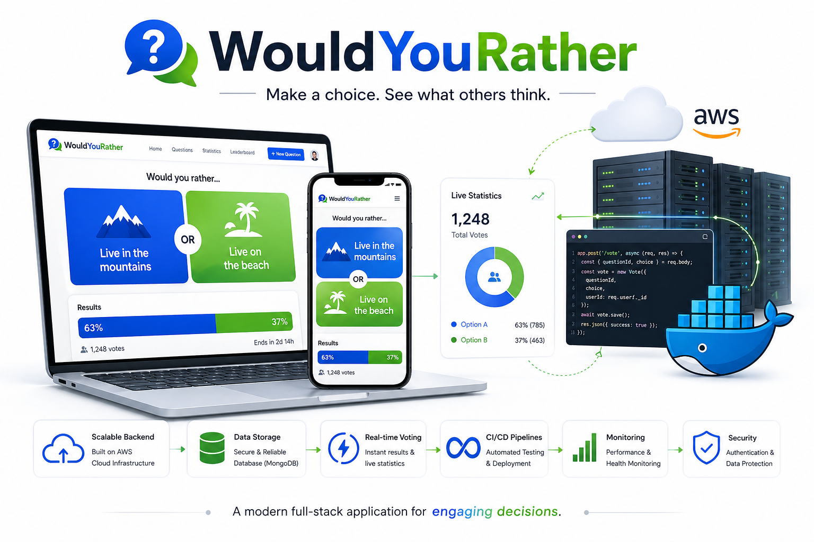
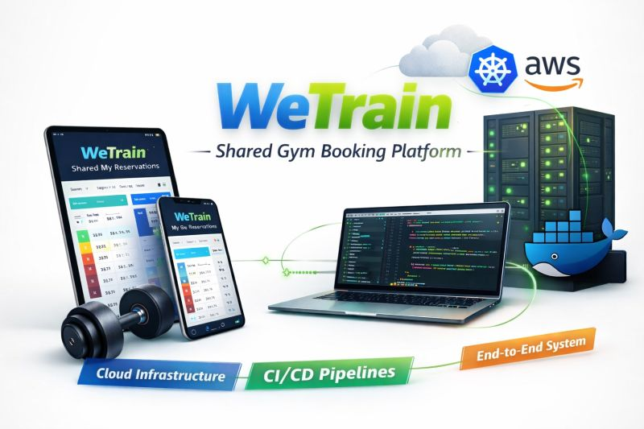
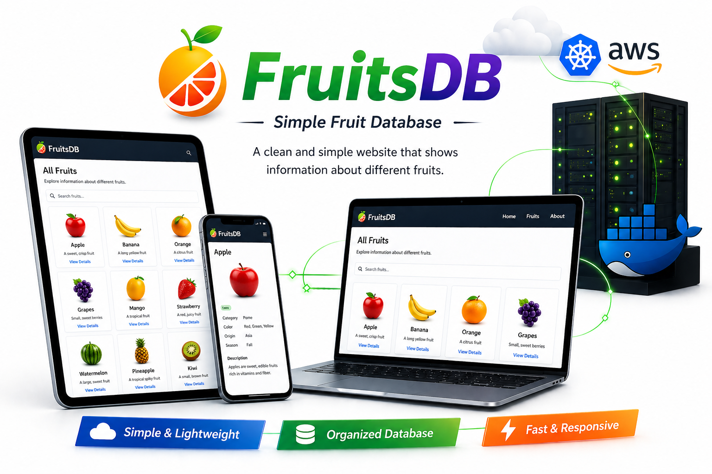

What I Focus On
Cloud infrastructure, CI/CD automation, containerized workloads, observability, and stable delivery pipelines.
Hello, I'm
DevOps Engineer
I build cloud-ready systems with Docker, Kubernetes, Terraform, GitHub Actions, AWS, and Linux, with a strong focus on reliability, automation, and clean delivery.
 LinkedIn
LinkedIn
 GitHub
GitHub
Get To Know More
Cloud infrastructure, CI/CD automation, containerized workloads, observability, and stable delivery pipelines.
I care about clarity, ownership, and building systems that are easy to operate, troubleshoot, and improve.
My IDF service as a Sergeant Commander and UAV instructor strengthened my leadership, communication, and calm decision-making under pressure.
I'm a DevOps engineer with a practical, hands-on approach to cloud infrastructure and automation. I enjoy turning manual processes into repeatable workflows, improving deployment confidence, and building environments that are reliable and easy to maintain.
My background includes Docker, Kubernetes, Helm, Terraform, GitHub Actions, Argo CD, Prometheus, Grafana, Datadog, Bash, Python, and Linux. I’m especially motivated by work that improves delivery speed, system resilience, and day-to-day operational clarity.
Explore My
Containerization
Orchestration
Cloud Infrastructure
Infrastructure as Code
CI/CD
RHEL and Ubuntu
Monitoring
Scripting
Solutions Architect Associate
Red Hat Certified System Administrator
Browse My Recent

End-to-end DevOps workflow with Docker, Kubernetes, Helm, GitHub Actions, Argo CD, and Terraform for reproducible, auditable delivery.

Flask and PostgreSQL trainer scheduling app with Docker, role-based access control, session overlap prevention, pytest, and GitHub Actions CI.

Multi-container inventory app using Node.js, MongoDB, Nginx, Docker Compose, backup and restore flows, and EC2 deployment through GitHub Actions.
Get In Touch